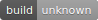

Master branch: 
Data sets, historical or otherwise, often contain a list of first names but seldom identify those names by gender. Most techniques for finding gender programmatically, such as the Natural Language Toolkit, rely on lists of male and female names. However, the gender* of names can vary over time. Any data set that covers the normal span of a human life will require a historical method to find gender from names.
This package encodes gender based on names and dates of birth, using either the Social Security Administration's data set of first names by year since 1880 (based on an implementation by Cameron Blevins) or the U.S. Census data from IPUMS for years before 1930 (contributed by Ben Schmidt). By using these data sets instead of lists of male and female names, this package is able to more accurately guess the gender of a name; furthermore it is able to report the proportion of times that a name was male or female for any given range of years.
You can install the CRAN version of this package with install.packages("gender"). The first time you use the package you will be prompted to install the necessary data, which is in the genderdata package hosted on GitHub.
If you prefer, you can install both packages directly from GitHub. First install devtools. Then run the following commands, which will install the gender package and its accompanying data package.
devtools::install_github("ropensci/gender")
devtools::install_github("lmullen/gender-data-pkg")The simplest way to use this package is to pass a single name to the gender()
function. You can optionally specify a year or range of years to the
function. If you specify the years option, the function will calculate
the proportion of male and female uses of a name for that time period.
gender("madison")
# $name
# [1] "madison"
#
# $proportion_male
# [1] 0.0162
#
# $proportion_female
# [1] 0.9838
#
# $gender
# [1] "female"
#
# $year_min
# [1] 1932
# $year_max
# [1] 2012Using the Social Security data, you can predict gender for years from 1880 to 2012. Notice that in the 1950s Madison is a male name.
gender("madison", method = "ssa", years = c(1950, 1959))
# $name
# [1] "madison"
#
# $proportion_male
# [1] 1
#
# $proportion_female
# [1] 0
#
# $gender
# [1] "male"
#
# $year_min
# [1] 1950
#
# $year_max
# [1] 1959Using the IPUMS U.S. Census data, you can predict gender from years from 1789 to 1930.
gender("madison", method = "ipums", years = 1820)
# $name
# [1] "madison"
#
# $proportion_male
# [1] 1
#
# $proportion_female
# [1] 0
#
# $gender
# [1] "male"
#
# $year_min
# [1] 1820
#
# $year_max
# [1] 1820See the function documentation for more options: ?gender. See the package vignette for suggestions on how to use the function with a data frame: vignette(topic = "predicting-gender", package = "gender")
The accompanying genderdata package includes cleaned-up versions of several data sets. To see the available data sets run the following command:
library(genderdata)
data(package = "genderdata")
data(ssa_national) # returns a data set with 1.6 million rowsThe raw data sets used in this package are available here:
MIT License, http://lmullen.mit-license.org/
Eventually Cameron and I will publish an article about this method. In the meantime, please cite this GitHub repository.
By Lincoln Mullen and contributors.
* Of course in most cases the Social Security Administration data more approximately records the biological category sex rather than the social category gender, since it mostly records names given at birth. But since in most cases researchers will be interested in gender, I've named this package gender, leaving it up to researchers to interpret exactly what the encoded values mean.